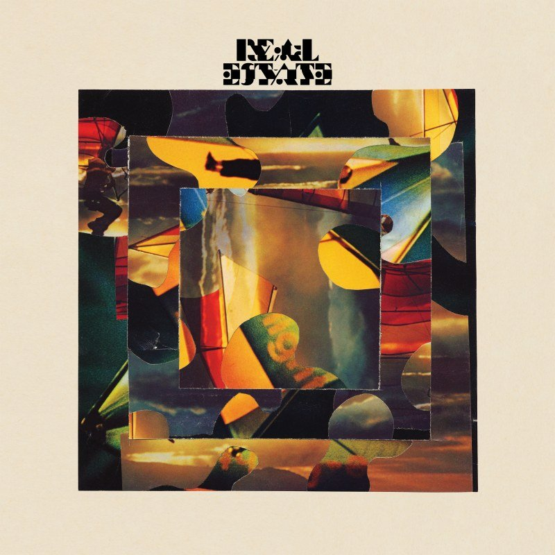

Training vectorizer script using spacy...
python spacy_ja.py --corpus ../../tenk_wiki.txt --questions xor-data/ja_en_train_input.txt --lang ja --stopwords stopwords-ja.txt --output-file debug_tenk.txt --store-vectorizer tenk_vectorizer.pk


Haha this is some text with a border that uses dotted lines.
My bounty is as boundless as the sea, My love as deep; the more I give to thee, The more I have, for both are infinite.